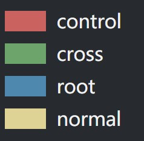

控制关系类型索引
Control
Cross
control：不明确控制关系
所有含有“control”关系的子图,“control”关系在原始数据表中的控股比例为1314%，是一种不明确投资比例的控制关系，可能为职业任职投资关系
cross：交叉持股
所有含有交叉持股关系的子图，因为所有交叉持股的持股比例都为100%，在该页面中的所有子图不存在代表实际控制人的root节点
multi：超过两个节点以上的控股关系
每一个子图通过相应算法识别出了一个实际控制人，在页面中表示为蓝色的root节点，子图中其他企业被表示为黄色的normal节点
double：双节点的控股关系
每一个子图通过相应算法识别出了一个实际控制人，在页面中表示为蓝色的root节点，子图中其他企业被表示为黄色的normal节点

可视化视图说明
1、同一个子图中，较大的节点为该子图的控制人，控制人类型可根据颜色进行索引
2、边显示的数字则为控制比例